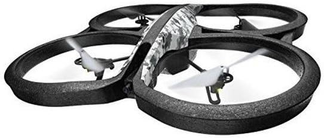

Experiencia en desarrollo tecnológico, emprendimientos y aplicación de tecnología en proyectos reales.
Durante varios años lideré un emprendimiento tecnológico enfocado en servicios con drones aplicados a producción audiovisual y apoyo a proyectos de investigación.
La empresa se especializaba en la filmación aérea de eventos, producción de contenido audiovisual y generación de material visual para instituciones y proyectos técnicos.
También colaboramos con equipos universitarios y proyectos de investigación que requerían capturas aéreas, análisis visual del terreno y documentación visual para distintos estudios.
Este proyecto implicó gestión empresarial, coordinación de equipos, planificación operativa, resolución de problemas técnicos y contacto directo con clientes e instituciones.

Esta experiencia permitió desarrollar habilidades de liderazgo, planificación de proyectos tecnológicos y trabajo con herramientas avanzadas de captura y procesamiento de información visual.
La gestión de un emprendimiento propio también implicó el manejo de aspectos administrativos, contacto con clientes, organización de proyectos y toma de decisiones estratégicas.
La combinación de tecnología, creatividad y resolución de problemas en entornos reales resultó una base sólida para el desarrollo profesional posterior en el ámbito tecnológico y de desarrollo de software.